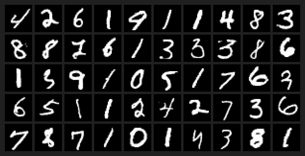

Generating MNIST Digits with Flow Matching
A generative model that learns to turn random noise into handwritten digits.

I first tested flow matching on eight clusters of points in two dimensions to see how the model moved noise toward the target distribution. I then adapted the course-provided U-Net to generate MNIST digits and compared Euler and Heun sampling at different step counts.
For the final model, I chose 50-step Heun sampling to balance recognition and runtime. On 2,000 unfiltered samples, the course classifier assigned a digit with more than 99% confidence to 90.9% of the images. Its predictions covered all ten digits.